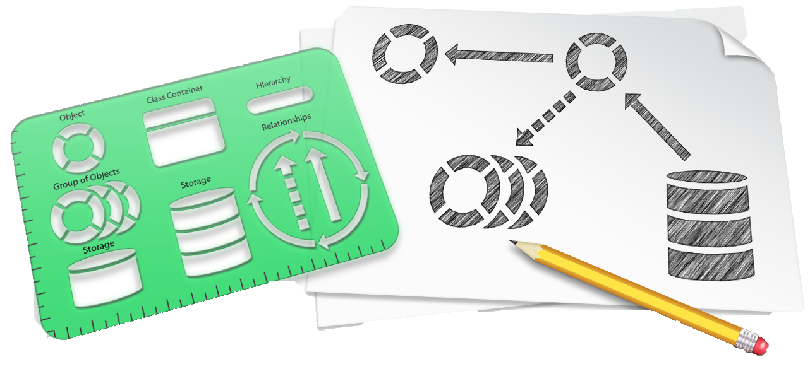
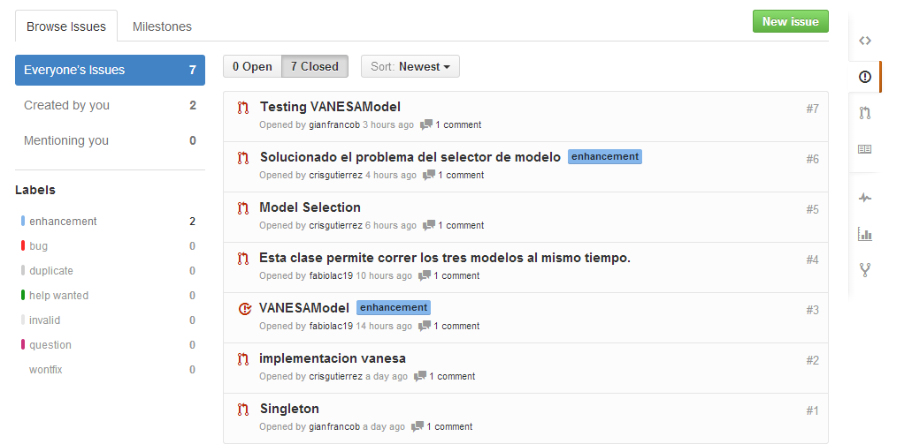

TRABAJO FINAL
INGENIERÍA DE SOFTWARE
Creado por Los Borbotones / @LosBorbotones
GRUPO
LOS BORBOTONES
Equipo
- Barbiani, Gianfranco
- Campos, Fabiola
- Gutierrez, Crístian
- Morales, Esteban
Introducción
Las consignas del trabajo final se desarrollan sobre un proyecto anteriormente construido y que forma parte de los ejemplos del Libro Head First design Patterns, página 526 a 548 (DJView). Este proyecto implementa un modelo de arquitectura MVC.
Modelos
- BeatModel
- HeartModel
Vista
DJView
Controladores
- ControllerInterface
- BeatController
- HeartController
Herramientas Utilizadas

|

|

|
Manejo de Configuraciones
Roles
- Barbiani es el Engineering Manager (EM)
- Campos es el Release Manager (RM)
- Gutierrez es el PSO Representative
- Morales es el Global Project Configuration Manager (GPCM)
Herramienta de Control de Versiones
"Git y Github"
Todos solicitan pull al repositorio principal.

Seguimiento de Errores
Usamos los ISSUES de la herramienta github.
Requerimientos del Sistema
Los requerimeintos del sistema se definieron al comienzo del proyecto y se verificaron al final.


Arquitectura de Software
Se establece una aquitectura de software inicial en términos de los diagramas de componentes y despliegue.

Diseño e Implementación
Conforme a las consideraciones del análisis preliminar del proyecto se definen las clases necesarias para construir el sistema y cumplir con los Requerimientos.
Clases implementadas:
- DJView
- VANESAController
- VANESAView
- VANESAModel
¿VANESA?
Inicialmente se había propuesto desarrollar un modelo capaz de correr un algoritmo de cálculo de componentes de amplitudes de frecuencias de la entrada del micrófono (Discrete Fourier Transform) y luego mostrar los resultados para un rango de frecuencias en el frame del BeatBar. Por lo tanto el nombre VANESA es un acrónimo para:
- V: Vizualización
- AN: Análisis
- ES: Espectro
- A: Audio
Pero...
La complejidad del argoritmo necesario y el poco tiempo con el que contábamos hizo que necesitáramos del plan de contingencias, la alternativa más sencilla. Por lo que decidimos desarrollarun modelo que calcule el valor eficaz de 1600 capturas de audio y muestre el nivel en la frecuencia de pulsación del BeatBar y luego en el porcentaje de llenado de una nueva vista.

DJView
Es una clase que se encontraba ya implementada por el código fuente original. Sin embargo, se le realizaron las siguientes modificaciones a fin de satisfacer los requerimientos pertinentes:
-
setModel : void:es el encargado de determinar qué modelo se mostrará por la vista. Para hacerlo eficientemente, primeramente remueve los observadores antiguos, refresca el modelo actual al deseado, y finalmente vuelve a registrar los observadores.
DJView
-
createView : void:para que crear un menú nuevo (con sus correspondientes items) dentro del frame del BeatBar, así con el permitir seleccionar entre los distintos modelos.
VANESAController
Esta clase está encargada de tomar los datos de la View, (de acuer do a la estrategia MVC), los procesa y con ellos ejecuta funciones del VANESAModel, logrando así la interacción desde el View, pasan do por el Controller hasta el Model.
VANESAView
Es la clase encargada de crear una vista para representar el modelo VANESAModel. Sus funciones son:
-
VANESAView : VANESAView:Registra los observadores (BeatObserver y BPMObserver) al modelo VANESAModel. A continuación crea una barra de progreso
jp : JProgressBara fin de con ella representar gráficamente el nivel de volumen leído por el micrófono. -
(@Override) updateBPM : void:Este método refresca la etiqueta que muestra el nivel de volumen del micrófono.
VANESAView
-
(@Override) updateBeat : void:En esta función, bajo ciertas condiciones, se "pinta" el valor de volumen del micrófono.
VANESAModel
Esta clase es un hilo que representa el comportamiento descrito por el REQ_FUN_004 y sus requerimientos derivados. Sus clases mas importantes son:
-
calculateRMSLevel : int:Calcula y devuelva el valor eficaz de un vector del tipo byte.
-
getAudioFormat : AudioFormat:Define la frecuencia de muestreo, el tamaño en bits del vector , el número de canales y otras variables y devuelve un nuevo objeto AudioFormat con el cual se realizará la captura de audio del micrófono.
-
run : void:Lee la información de audio de la línea de entrada del buffer. Luego se calcula el valor RMS del arreglo de bytes y con él genera una lectura que representa el volumen de la entrada por micrófono. Finalmente se notifica a todos los observadores. Cabe aclarar que al momento de notificar al BeatBar, este se hace cada un período mayor cuanto menor sea el volumen leído.